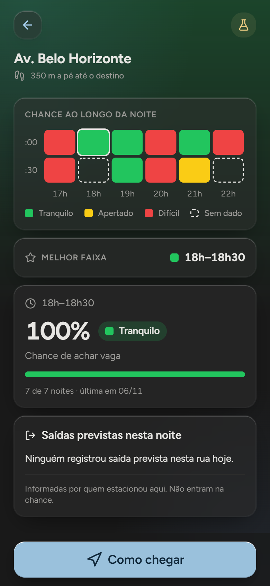
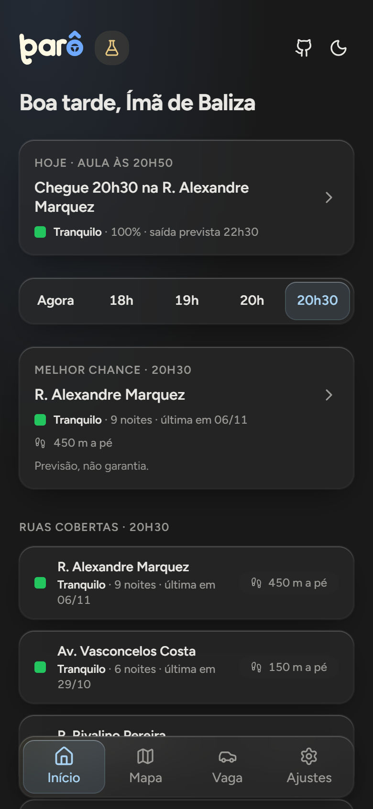

{{LOGO}}
Pesquisa de Mercado · Entrega 4
Chance de vaga por rua e horário
Equipe Brasil · Prof. Maxwell Gomes
ESAMC Uberlândia · Novembro de 2026


Stack
Com o que o Parô foi construído
Interface

Nuxt 4Vue 3 e Vite: telas, rotas e API

TypeScriptNo app e no servidor

Tailwind CSS 4Estilos, com o Nuxt UI 4

PiniaEstado entre as telas

PWAInstala no celular, abre offline
Mapa, gráficos e PDF

MapLibre GLMapa real com tiles PMTiles próprios
Apache EChartsGráficos da rua e da equipe

pdf.jsLê a grade horária no celular
Servidor e dados

Node.jsServidor Nitro, do próprio Nuxt
PostgreSQLBanco relacional, PGLite nos testes
SupabasePostgres hospedado em produção
Publicação e qualidade
VercelHospedagem e cron diário
VitestTestes automáticos
ESLintPadrão de código
10
O app no celular
Mobile first, sem cadastro
PWA instalável, desempenho, utilidade e velocidade.
Início: melhor chance e ruas cobertas
Detalhe da rua: chance ao longo da noite
Mapa: ruas pintadas pela faixa de chance

11
Rotina pela grade horária
Melhor chegada pela grade de aulas
Importe o horário de aulas do portal da ESAMC. O PDF é lido no próprio celular e não vai ao servidor.
Importar: PDF da grade, só aulas da noite
Conferir: corrigir cada dia antes de salvar
Chegar: melhor rua e faixa até a aula



12
O produto
Faça o teste no seu celular

18